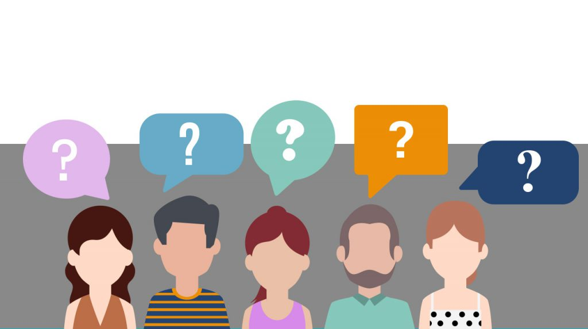

SAFETTY COMPAS- Seguridad en la palma de tu mano
En Saffety Compas, nuestra principal prioridad es tu seguridad. Nos dedicamos a proporcionar soluciones integrales que te permiten disfrutar de viajes seguros y confiables. Desde el monitoreo en tiempo real de tus rutas hasta la asistencia en caso de emergencia, estamos comprometidos a brindarte la tranquilidad que necesitas en cada desplazamiento. Nuestros servicios no solo se enfocan en la prevención y respuesta, sino también en la formación en seguridad vial, asegurando que nuestros clientes estén prevenidos ante cualquier situación. Explora nuestros servicios encontraras diferentes sistemas de seguridad avanzados. Te acompañamos en cada kilómetro del camino, garantizando un trayecto seguro y sin preocupaciones.
Conócenos
Saffety compas, está dirigido a todas las personas que deseen mejorar su seguridad cuando se desplacen hacia su destino.
VISIÓN
"Ser la plataforma líder a nivel global en la recomendación de rutas seguras, mejorando la seguridad y la tranquilidad de los viajes de millones de personas en todo el mundo."
MISIÓN
"Nuestra misión es proporcionar a los viajeros una experiencia de conducción segura y sin preocupaciones a través de nuestra innovadora aplicación. Nos esforzamos por recomendar rutas seguras, informar sobre condiciones del tráfico en tiempo real y fomentar una cultura de seguridad vial, contribuyendo a la reducción de accidentes en las carreteras y promoviendo un mundo de viajes seguros y eficientes."
Ver Nuestros servicios
Nuestra aplicación está diseñada para brindar las mejores rutas
Confia en nuestra seguridad, confia en Saffety Compas
Estos son algunos de nuestros servicios que están disponibles dentro de la app:
****Visualizar informes estadísticos de rutas seguras*****
Hoy en día es importante tener información verídica en cual basarnos para tomar mejores decisiones en nuestro caso también te ofrecemos una previa visualización de cómo está el nivel de seguridad en el área que decidas recorrer.
***Unirte a la comunidad Saffety Compas****
Permite la interacción entre los usuarios, aqui te enterarás en tiempo real de lo que está sucediendo en otros distritos o a tus alrededores!!!
***Botones de Alerta****
¿Qué pasa si soy víctima de un asalto en tiempo real?. No te preocupes, nuestra aplicación te permite acceder a distinto botones, entre ellos nuestro botón de pánico con el podrás alertar amigos y familiares cercanos para tu pronto auxilio.

***Análisis y Recomendaciones Personalizadas****
Como una app dirigida a rutas seguras, no tenemos dudas que este servicio te será de mucha ayuda, un registro personalizado de los sitios donde ha ocurrido un accidente dentro de tu localidad, informes tales como -robo de viviendas -robos de vehículos -asaltos a mano armada Nuestra app te mostrará los informes más recientes para que llegues sano y salvo hacia tu destino, porque priorizamos tu vida y de la de tus seres queridos.
***Preguntas y respuestas***
Selecciona un tema para obtener respuestas a preguntas frecuentes: